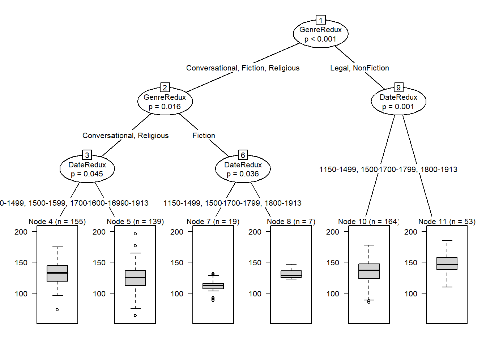

Conditional Inference Trees
Conditional Inference Trees (CITs) are much better at determining the true effect of a predictor, i.e. the effect of a predictor if all other effects are simultaneously considered. In contrast to CARTs, CITs use p-values to determine splits in the data. Below is a conditional inference tree which shows how and what factors contribute to the use of discourse like. In conditional inference trees predictors are only included if the predictor is significant (i.e. if these predictors are necessary).
Example 1: disourse like
In a first step, we load the data (in this case, the data is stored online and made available via the LADAL github repo).
citdata <- read.delim("https://slcladal.github.io/data/treedata.txt", header = T, sep = "\t")
# inspect the data (head shows the first 6 lines)
head(citdata)## Age Gender Status LikeUser
## 1 15-40 female high no
## 2 15-40 female high no
## 3 15-40 male high no
## 4 41-80 female low yes
## 5 41-80 male high no
## 6 41-80 male low noWe can also inspect the structure of the data using the str() function as shown below.
# inspect the data (str shows the structure of the data)
str(citdata)## 'data.frame': 251 obs. of 4 variables:
## $ Age : chr "15-40" "15-40" "15-40" "41-80" ...
## $ Gender : chr "female" "female" "male" "female" ...
## $ Status : chr "high" "high" "high" "low" ...
## $ LikeUser: chr "no" "no" "no" "yes" ...We can see that all variables are character variables (indicated by the chr next to the variable name). However, CITs require factors (not character strings) and we thus need to convert the variables into factors (which we can do using mutate_if(is.character, factor))
# convert character strings to factors
citdata <- citdata %>%
dplyr::mutate_if(is.character, factor)
# inspect the data (str shows the structure of the data)
str(citdata)## 'data.frame': 251 obs. of 4 variables:
## $ Age : Factor w/ 2 levels "15-40","41-80": 1 1 1 2 2 2 2 1 2 2 ...
## $ Gender : Factor w/ 2 levels "female","male": 1 1 2 1 2 2 1 2 2 2 ...
## $ Status : Factor w/ 2 levels "high","low": 1 1 1 2 1 2 2 1 2 2 ...
## $ LikeUser: Factor w/ 2 levels "no","yes": 1 1 1 2 1 1 2 1 1 1 ...Now we can implement the CIT. We start by defining a so-called control which allows us to model that we are running several test in one go. Setting a control in this case means that we lower the significance levels so that the overall significance level (of all test combined is still at \(\alpha\) = .05 (this prevents errors in our analysis called false positives).
# apply bonferroni correction (1 minus alpha multiplied by n of predictors)
control = ctree_control(mincriterion = 1-(.05*ncol(citdata)-1))After setting the control, we implement the CIT by using the ctree function from the partykit package. This function requires the formula (the dependent variable ~ and the independent variables) and the specification of the data. Then, we plot the resulting CIT using the plot function.
# create initial conditional inference tree model
citd.ctree <- partykit::ctree(LikeUser ~ Age + Gender + Status,
data = citdata)
plot(citd.ctree, gp = gpar(fontsize = 8)) # plot final ctree
Example 2: Prepositions
We now proceed with a different example that uses a numeric dependent variable. In this example, we want to see what factors impact the use of prepositions across time in historical texts. The analysis is based on data extracted from the Penn Corpora of Historical English (see http://www.ling.upenn.edu/hist-corpora/), that consists of 603 texts written between 1125 and 1900.
Be start again by loading the data.
pvd <- base::readRDS(url("https://slcladal.github.io/data/pvd.rda", "rb")) %>%
dplyr::mutate_if(is.character, factor) %>%
# remove columns we do not need
dplyr::select(-Date, -Genre, -Text)
# inspect
head(pvd); str(pvd)## Prepositions Region GenreRedux DateRedux
## 1 166.01 North NonFiction 1700-1799
## 2 139.86 North NonFiction 1700-1799
## 3 130.78 North Conversational 1800-1913
## 4 151.29 North NonFiction 1800-1913
## 5 145.72 North NonFiction 1700-1799
## 6 120.77 North NonFiction 1800-1913## 'data.frame': 537 obs. of 4 variables:
## $ Prepositions: num 166 140 131 151 146 ...
## $ Region : Factor w/ 2 levels "North","South": 1 1 1 1 1 1 1 1 1 1 ...
## $ GenreRedux : Factor w/ 5 levels "Conversational",..: 4 4 1 4 4 4 1 4 4 1 ...
## $ DateRedux : Factor w/ 5 levels "1150-1499","1500-1599",..: 4 4 5 5 4 5 5 5 4 4 ...Next, we set the control just like we did before.
# apply bonferroni correction (1 minus alpha multiplied by n of predictors)
control = ctree_control(mincriterion = 1-(.05*ncol(pvd)-1))Now, we implement the CIT and plot the results.
# create initial conditional inference tree model
citd.ctree2 <- partykit::ctree(Prepositions ~ DateRedux + Region + GenreRedux,
data = pvd)
plot(citd.ctree2, gp = gpar(fontsize = 8)) # plot final ctree
Prettifying your CIT tree
The easiest and most common way to visualize CITs is to simply use the plot function from base R. However, using this function does not allow to adapt and customize the visualization except for some very basic parameters. The ggparty function allows to use the ggplot syntax to customize CITs which allows more adjustments and is more aesthetically pleasing.
To generate this customized CIT, we activate the ggparty package and extract the significant p-values from the CIT object. We then plot the CIT and define the nodes, edges, and text elements as shown below.
# extract p-values
pvals <- unlist(nodeapply(citd.ctree, ids = nodeids(citd.ctree), function(n) info_node(n)$p.value))
pvals <- pvals[pvals <.05]
# plotting
ggparty(citd.ctree) +
geom_edge() +
geom_edge_label() +
geom_node_label(line_list = list(aes(label = splitvar),
aes(label = paste0("N=", nodesize, ", p",
ifelse(pvals < .001, "<.001", paste0("=", round(pvals, 3)))),
size = 10)),
line_gpar = list(list(size = 13),
list(size = 10)),
ids = "inner") +
geom_node_label(aes(label = paste0("Node ", id, ", N = ", nodesize)),
ids = "terminal", nudge_y = -0.0, nudge_x = 0.01) +
geom_node_plot(gglist = list(
geom_bar(aes(x = "", fill = LikeUser),
position = position_fill(), color = "black"),
theme_minimal(),
scale_fill_manual(values = c("gray50", "gray80"), guide = FALSE),
scale_y_continuous(breaks = c(0, 1)),
xlab(""),
ylab("Probability"),
geom_text(aes(x = "", group = LikeUser,
label = stat(count)),
stat = "count", position = position_fill(), vjust = 1.1)),
shared_axis_labels = TRUE)
We can also use position_dodge (instead of position_fill) to display frequencies rather than probabilities as shown below.
# plotting
ggparty(citd.ctree) +
geom_edge() +
geom_edge_label() +
geom_node_label(line_list = list(aes(label = splitvar),
aes(label = paste0("N=", nodesize, ", p",
ifelse(pvals < .001, "<.001", paste0("=", round(pvals, 3)))),
size = 10)),
line_gpar = list(list(size = 13),
list(size = 10)),
ids = "inner") +
geom_node_label(aes(label = paste0("Node ", id, ", N = ", nodesize)),
ids = "terminal", nudge_y = 0.01, nudge_x = 0.01) +
geom_node_plot(gglist = list(
geom_bar(aes(x = "", fill = LikeUser),
position = position_dodge(), color = "black"),
theme_minimal(),
theme(panel.grid.major = element_blank(),
panel.grid.minor = element_blank()),
scale_fill_manual(values = c("gray50", "gray80"), guide = FALSE),
scale_y_continuous(breaks = seq(0, 100, 20),
limits = c(0, 100)),
xlab(""),
ylab("Frequency"),
geom_text(aes(x = "", group = LikeUser,
label = stat(count)),
stat = "count",
position = position_dodge(0.9), vjust = -0.7)),
shared_axis_labels = TRUE)
Extensions of Conditional Inference Trees
An extension which remedies this problem is to use a so-called ensemble method which grows many varied trees. The most common ensemble method is called a Random Forest Analysis and, unfortunately, we cannot deal with random forests here (but if you are interested, check out this tutorial).